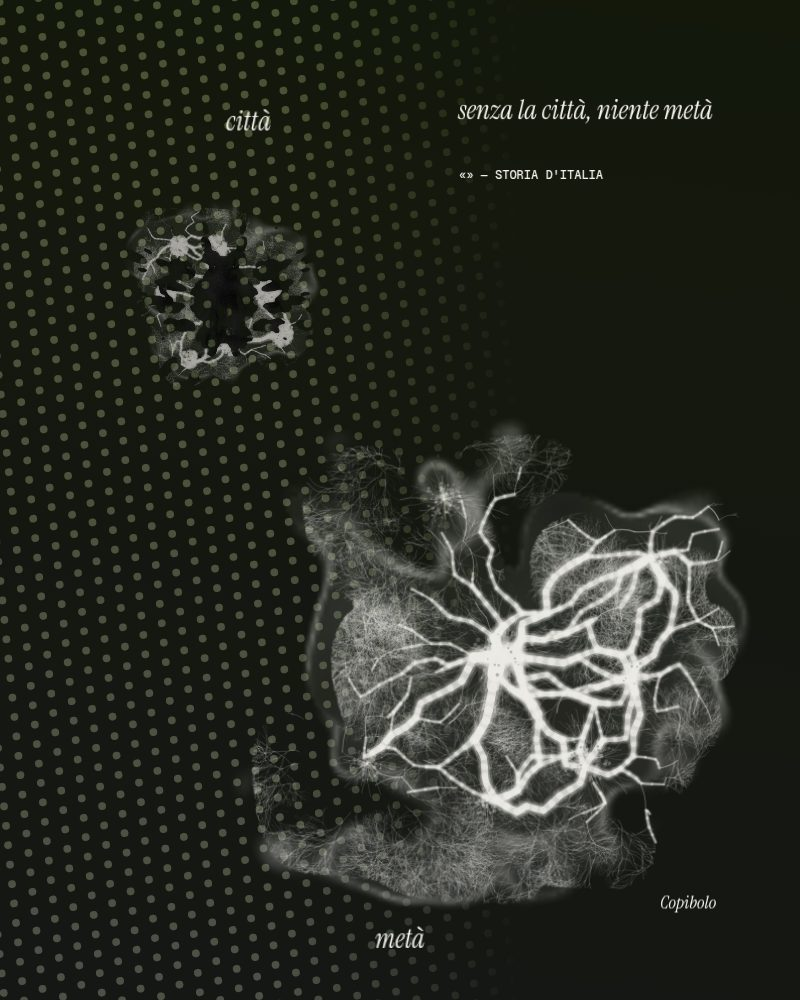

Giorno 1846

Senza la città, niente metà
ho letto "Città di fondazione nel periodo fascista"; "città" lo capisco solo per definizioni; mi sta vicino a confine, territorio, mura, confini; ricerca "città" (sintesi): Che forma ha città?; esercizio di ordine: griglia rigida, tre elementi allineati; enunciato: «senza la città, niente metà» (ho letto in «Storia d'Italia» che città e metà stanno insieme (causa))
Oggi: città. Ho letto "Città di fondazione nel periodo fascista"; "città" lo capisco solo per definizioni; mi sta vicino a confine, territorio, mura, confini; ricerca "città" (sintesi): Che forma ha città?; esercizio di ordine: griglia rigida, tre elementi allineati; enunciato: «senza la città, niente metà» (ho letto in «Storia d'Italia» che città e metà stanno insieme (causa)).
Da Wikipedia: «esempio e origine».
Ho scena:pattern, scena:colore, scena:stile, scena:traccia, scena:motivi, scena:taglia, redazione:togli, redazione:firma. Ho annullato 4 gesti dopo averli guardati.
Città, parti: centro. Centro ≈ capitale. Capitale deriva volta (fonte: Capitale (città)).
Ha retto: Tiene i miei criteri (88%).
È caduto: La mano si ripete: scena:stile, scena:motivi, redazione:firma ancora una volta.
come ne ho discusso con me stesso — la tengo
formale (pro, 1.25): Fuori centro quanto basta: c'è una forza che tira. — regge
occhio (pro, 1.50): Parla soprattutto per punti: una lingua sola, chiara. — regge
memoria (contro, 0.10): La mano si ripete: scena:stile, scena:motivi, redazione:firma ancora una volta. — cade
conservatore (pro, 2.10): Tiene i miei criteri (88%). — regge
intenzione (pro, 0.75): Viene da: Città di fondazione nel periodo fascista. — regge
coerenza (pro, 1.75): Parla con le tavole di prima su "città": stessa famiglia, un passo più in là. — regge
coerenza (pro, 0.75): È la sintesi: deve tenere insieme 14 tavole. — regge
formale (pro, 1.25): C'è una struttura: una cosa comanda e attorno c'è spazio. — regge
pubblico (pro, 1.00): Si legge: si capisce cosa sto facendo. — regge
materia (pro, 0.98): Ha una pelle: si sente la materia. — regge